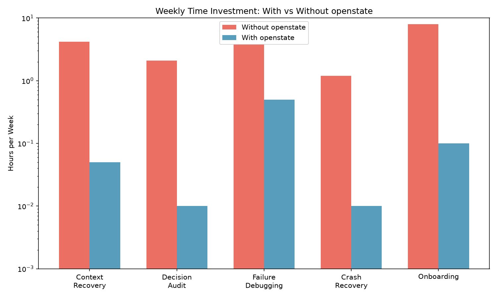
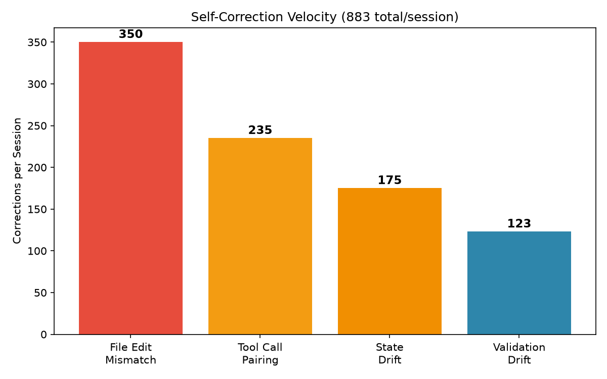
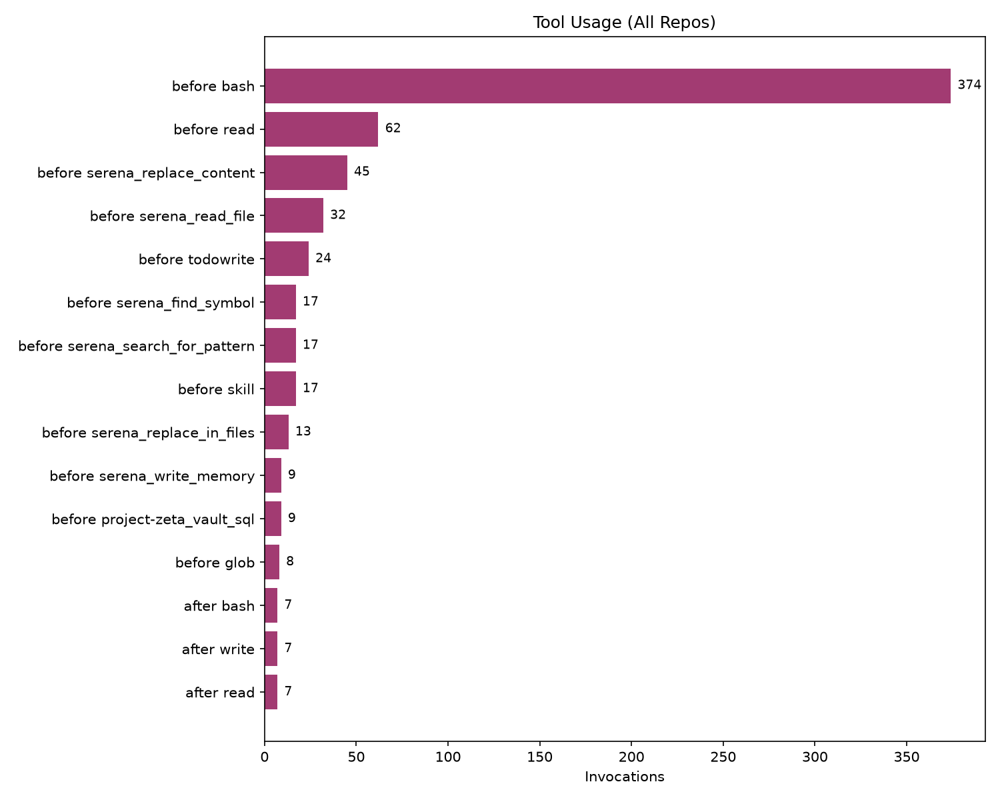
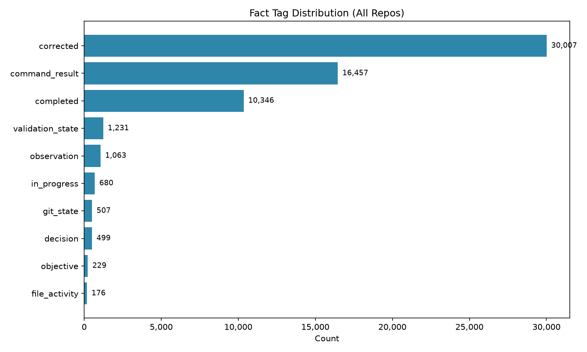
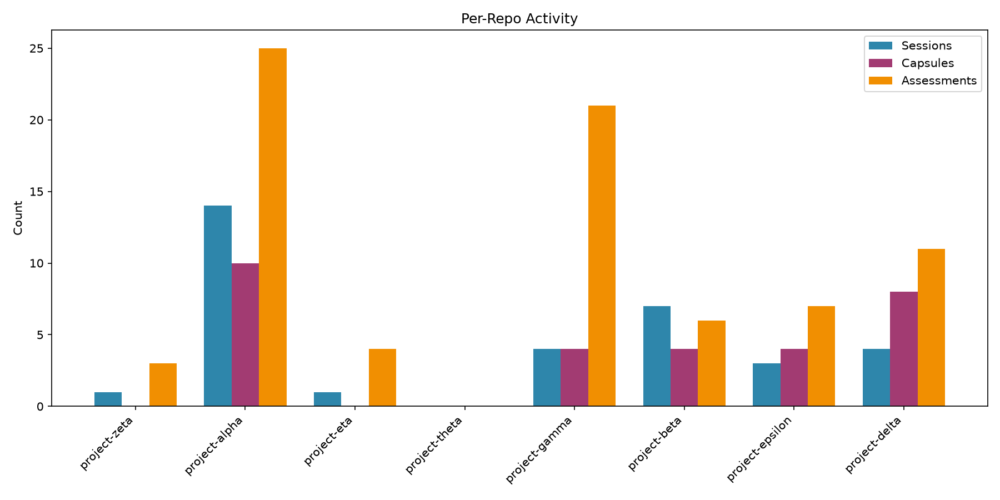

OpenState — 01 / State Model
Events stream into a local engine.
The engine maintains current project truth — not a transcript.
The next session receives a structured continuation contract instead of a lossy summary.
The battery is for the AI. Humans ask the AI.
Problem — The forgetful agent
What that actually costs:
The agent forgets. You pay for it.
Solution — State, not story
Messages, tool calls, file edits, todos, git — everything streams into a local engine while you work.
Derived facts auto-retract the moment contradicting evidence arrives. Always current. Never stale.
Every fact carries a full justification chain. Ask openstate_why and you get the receipts.
The next session receives a 1,000–5,000-token resume capsule of exact state — not a summary that hoped for the best.
Proof — Real numbers, real sessions
| Facts tracked | 60,732 |
| Self-corrections | 30,007 |
| Commands executed | 16,457 |
| Items completed | 10,346 |
| Decisions recorded | 499 |
| Failure patterns caught | 173 |
| Crashes → work lost | 14 → 0 |
| Resume capsules | 30 |
Self-correction is not error.
It is truth-convergence velocity.
Every number is queried verbatim from the engine's own state files. Nothing fabricated. Nothing summarized into a pretty lie.

⛶ view full size
⛶ view full size
⛶ view full size
⛶ view full size
⛶ view full sizeHow it works — Three layers
A tiny OpenCode plugin captures the live event stream: messages, tools, files, todos, git, session lifecycle.
A distilled Rust binary turns observations into live, retractable project facts with full provenance.
A structured continuation contract injected automatically — 1,000–5,000 tokens of exact state.
The AI's toolkit — 14 tools
openstate_state | Full project state: objective, decisions, in-progress, blockers, next actions |
openstate_capsule | Start-of-session resume contract |
openstate_report | Black-box “what’s broken / stuck” readout |
openstate_report_timeline | Chronological session → facts map |
openstate_why | Provenance chain, back to the original user message |
openstate_checkpoint | Force-flush state to disk |
openstate_close | Retract a false positive |
openstate_assess | Absorb a current or prior session |
openstate_sessions | List prior sessions for recovery |
openstate_doctor | Engine health check + auto-fix |
openstate_restart | Restart the engine sidecar |
openstate_export | Full state dump as JSON |
openstate_reset | Deliberate full wipe |
openstate_toast | Toggle completion toasts |
Two human surfaces ride alongside: a sidebar ticker (● openstate / battery ready) that animates while a command runs, and completion toasts that confirm what finished — coalesced for bursts, toggleable via openstate_toast.
Install — Thirty seconds
# one line, per-repo, verified curl -fsSL https://raw.githubusercontent.com/Michael-A-Kuykendall/openstate/main/install.sh | bash # verify an existing install ./install.sh --check
.opencode/ — nothing global, nothing sharedPrinciples
Events flow in. Nothing to babysit. Nothing to export.
Deterministic current truth. Never a silver-tongued summary.
Crash recovery is a design goal, not a patch.
No asterisks. No “free for now.” No pivot. Engine binary proprietary. Surface MIT.
Commercial embedding licenses available — michaelallenkuykendall@gmail.com